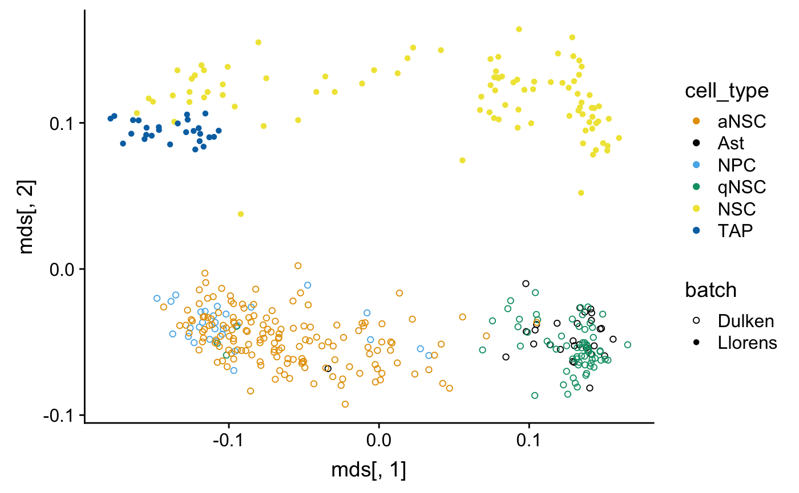
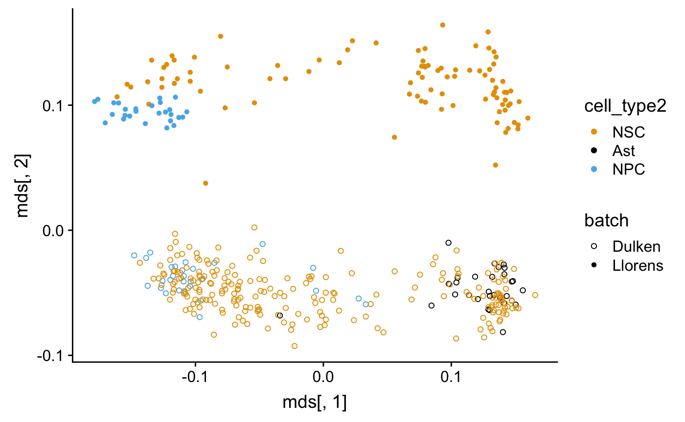
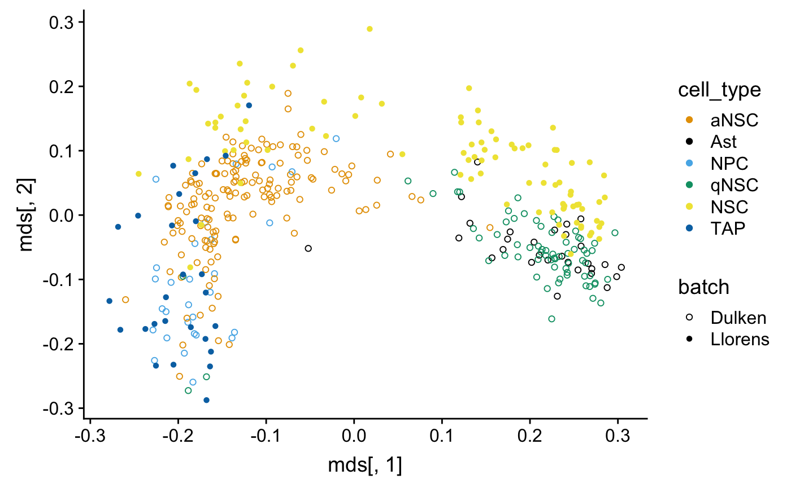
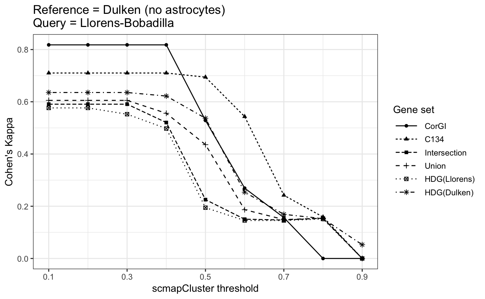
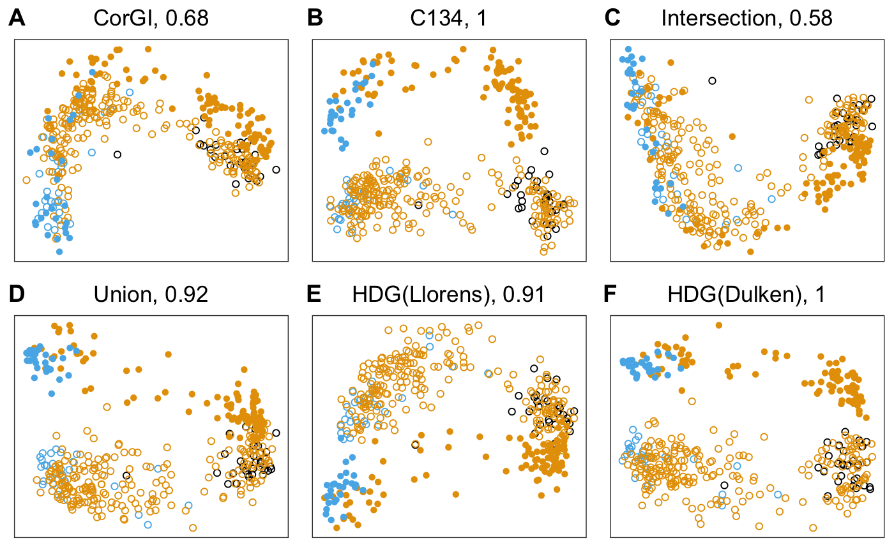
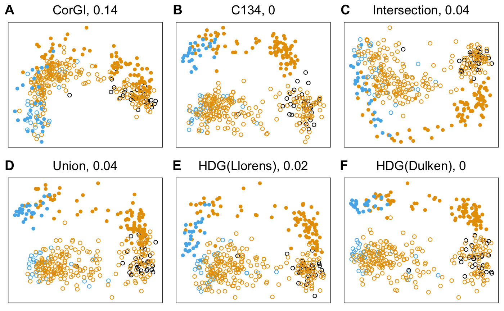
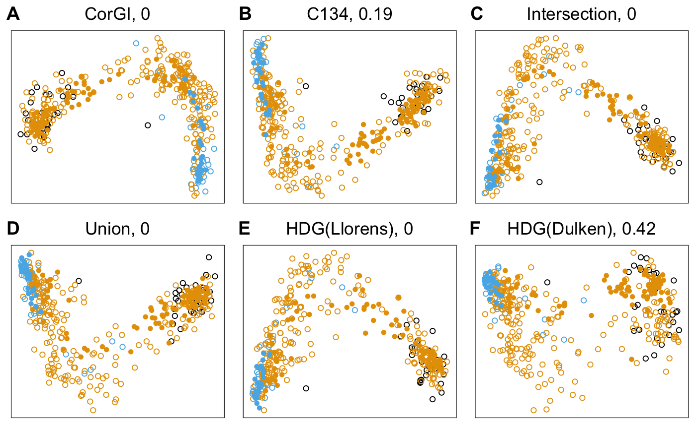
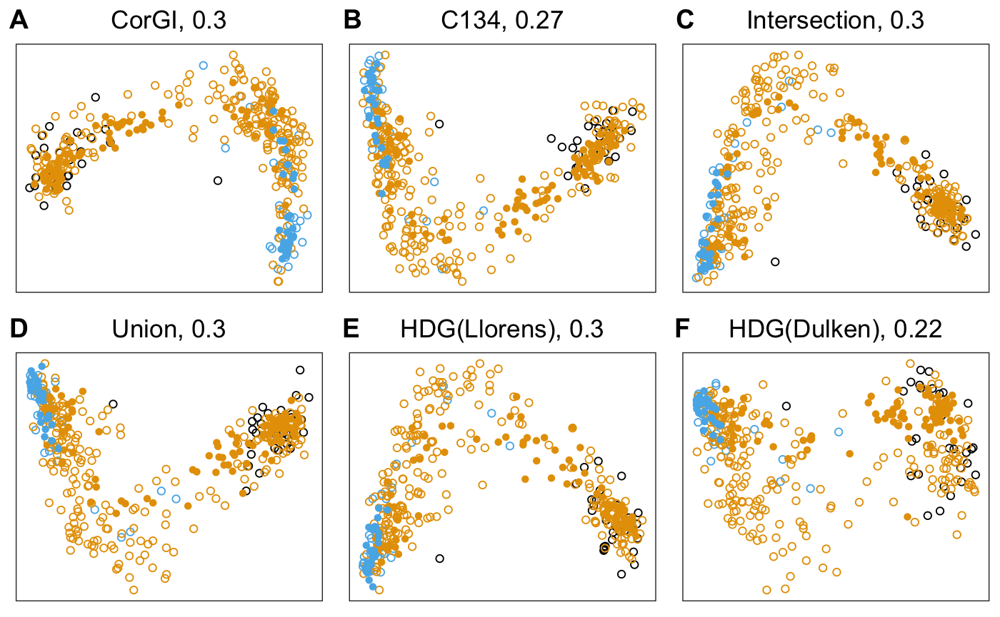
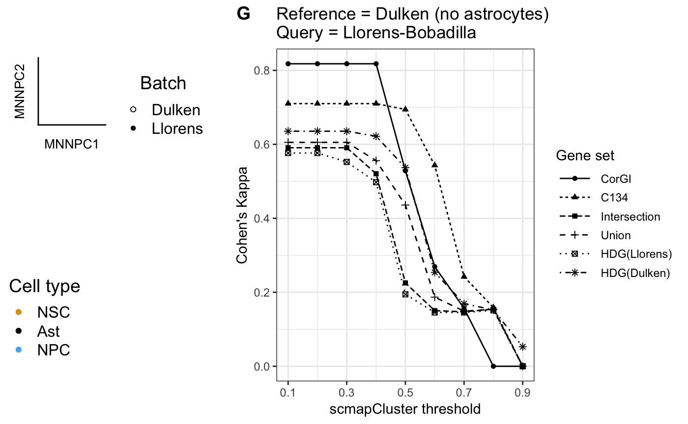

Neurogenesis in the SVZ
Yutong Wang
2019-02-05
neurogenesis.RmdIntroduction
In this vignette, we use the semi-supervised version of corgi applied to the neurogenesis in subventricular zone datasets:
Data cleaning
Load data from Llorens-Bobadilla et al. This code is obtained from the GitHub code for Figure 6B in Dulken et al 2017
Llorens_allcounts<-read.table(url("https://github.com/bdulken/SVZ_NSC_Dulken_2/raw/master/Files/Llorens_counts_allgenes.txt"))
allcounts_allcells<-Llorens_allcounts
#Remove neuroblasts from Llorenss data
#allcounts_allcells_notaps<-allcounts_allcells[!grepl("tap",colnames(allcounts_allcells))]
allcounts_allcells_noblasts<-allcounts_allcells[!grepl("PSA",colnames(allcounts_allcells))]
#Remove oligodendrocytes from Llorenss data
oligos<-as.vector(read.table(url("https://raw.githubusercontent.com/bdulken/SVZ_NSC_Dulken_2/master/Files/comp_oligos.txt"))[,1])
allcounts_allcells_noblasts_nooligo<-allcounts_allcells_noblasts[,-na.omit(match(oligos,colnames(allcounts_allcells_noblasts)))]
allcounts_allcells_noblasts_nooligo_noERCC<-allcounts_allcells_noblasts_nooligo[!grepl("ERCC-",rownames(allcounts_allcells_noblasts_nooligo)),]
llorens <- allcounts_allcells_noblasts_nooligo_noERCCOverview of the Llorens-Bobadilla dataset
| N_GP_1_STAR_sorted_counts | N_GP_10B_STAR_sorted_counts | N_GP_11_STAR_sorted_counts | N_GP_11B_STAR_sorted_counts | N_GP_12_STAR_sorted_counts | N_GP_12B_STAR_sorted_counts | |
|---|---|---|---|---|---|---|
| 0610005C13Rik | 0 | 0 | 0 | 0 | 0 | 0 |
| 0610007N19Rik | 0 | 0 | 0 | 0 | 0 | 0 |
| 0610007P14Rik | 0 | 252 | 418 | 0 | 312 | 47 |
| 0610008F07Rik | 0 | 0 | 0 | 0 | 0 | 0 |
| 0610009B14Rik | 0 | 0 | 0 | 0 | 0 | 0 |
| 0610009B22Rik | 35 | 203 | 469 | 39 | 0 | 249 |
| 0610009D07Rik | 825 | 1512 | 2044 | 97 | 1071 | 3254 |
| 0610009L18Rik | 0 | 0 | 0 | 1269 | 0 | 375 |
| 0610009O20Rik | 766 | 2203 | 96 | 165 | 2869 | 427 |
| 0610010B08Rik | 0 | 0 | 0 | 0 | 0 | 0 |
Parse the cell type metadata
llorens_cell_type <- factor(
unlist(
lapply(X = colnames(llorens),
FUN = function(x){substr(x,1,1)})
)
)Make the cluster labels more intuitive neural stem and transient transit amplifying cells (NSC and TAP)
Load Dulken et al 2017 dataset
This code is obtained from the GitHub code for Figure 1 in Dulken et al 2017. The difference between our code and theirs is that we don’t filter out cell-cycle genes.
#Loading all high quality cells and filtering for lowly expressed genes
spec_pops<-read.table(url("https://raw.githubusercontent.com/bdulken/SVZ_NSC_Dulken_2/master/Files/AllCounts_specPops_read_gene_ERCC_filt_FINAL.txt"))
allcounts_allcells<-spec_pops
#Removing Oligodendrocytes and Outliers
oligos<-as.vector(read.table(url("https://raw.githubusercontent.com/bdulken/SVZ_NSC_Dulken_2/master/Files/STAR_oligos_updated_09232015.txt"))[,1])
allcounts_allcells_nooligo<-allcounts_allcells[,-na.omit(match(oligos,colnames(allcounts_allcells)))]
#Filtering for expressed by 5 cells at 10 counts
greaterthan0<-allcounts_allcells_nooligo>10
greaterthan0sum<-rowSums(greaterthan0)
allcounts_allcells_nooligo_genefilt<-allcounts_allcells_nooligo[greaterthan0sum>=5,]
dulken <- allcounts_allcells_nooligo_genefiltOverview of the Dulken dataset
| NPC_06_1g | NPC_16_1g | NPC_19_1g | NPC_25_1g | NPC_35_1g | NPC_38_1g | |
|---|---|---|---|---|---|---|
| 0610007P14Rik | 56 | 0 | 21 | 0 | 0 | 0 |
| 0610009B22Rik | 0 | 0 | 0 | 0 | 0 | 0 |
| 0610009D07Rik | 0 | 37 | 1 | 0 | 4 | 0 |
| 0610009O20Rik | 0 | 1 | 0 | 0 | 3 | 0 |
| 0610010F05Rik | 0 | 0 | 13 | 0 | 0 | 0 |
| 0610010K14Rik | 0 | 0 | 0 | 0 | 0 | 0 |
| 0610011F06Rik | 30 | 0 | 13 | 0 | 0 | 30 |
| 0610012G03Rik | 2 | 0 | 0 | 0 | 0 | 0 |
| 0610030E20Rik | 0 | 0 | 0 | 0 | 0 | 0 |
| 0610031J06Rik | 0 | 0 | 0 | 0 | 0 | 0 |
Parse the cell type metadata
dulken_cell_type <-
factor(
unlist(
lapply(X=colnames(dulken),
FUN=function(x){strsplit(x,split = "_",fixed=T)[[1]][1]})
)
)
We consider only genes in both datasets.
Exploratory analysis
Combine the datasets
Merged metadata for the merged dataset
cell_type <- forcats::fct_c(dulken_cell_type,llorens_cell_type)
batch <- c(rep("Dulken",ncol(dulken)),rep("Llorens",ncol(llorens)))Overview of the cell types in each dataset
| Dulken | Llorens | |
|---|---|---|
| aNSC | 152 | 0 |
| Ast | 29 | 0 |
| NPC | 29 | 0 |
| qNSC | 69 | 0 |
| NSC | 0 | 92 |
| TAP | 0 | 27 |
Simplify and combine some of the cell-types for visualization
cell_type2 <- plyr::mapvalues(x = cell_type,
from = c("aNSC", "Ast", "NPC", "qNSC", "NSC", "TAP"),
to = c("NSC","Ast","NPC","NSC","NSC","NPC"))
kable(table(cell_type2, batch))| Dulken | Llorens | |
|---|---|---|
| NSC | 221 | 92 |
| Ast | 29 | 0 |
| NPC | 29 | 27 |
my_shape_palette <- c(1, 16)
my_color_palette <- c("#E69F00", "#000000", "#56B4E9", "#009E73", "#F0E442", "#0072B2", "#D55E00", "#CC79A7")
qplot <- function(...){
ggplot2::qplot(...) +
scale_shape_manual(values = my_shape_palette) +
scale_color_manual(values = my_color_palette)
}Dimensionality reduction using all genes
Multidimensional-scaling on Spearman rho distance matrix using all the genes results in a scatterplot with clearly separated batches
D <- (1-cor(comb,method = "spearman"))/2 # Spearman rho distance matrix
mds <- cmdscale(D,k=2) # Multidimensional-scaling
qplot(mds[,1],mds[,2],color = cell_type,shape = batch)

Download the genes ranked by their supervised feature selection method
library("openxlsx")
consensus_genes <- read.xlsx("https://www.ncbi.nlm.nih.gov/pmc/articles/PMC5269583/bin/NIHMS839312-supplement-7.xlsx")
dim(consensus_genes)
#> [1] 100 101
kable(consensus_genes[1:10,1:5]) # print a nice looking table of the top-left corner of the data| GBM.Importance.Rank | Model.1 | Model.2 | Model.3 | Model.4 |
|---|---|---|---|---|
| 1 | Clu | Gja1 | Ptma | Clu |
| 2 | Htra1 | Vrk1 | Clu | Htra1 |
| 3 | Ccnd2 | Gm13826 | Htra1 | Nono |
| 4 | H3f3b | Ccnd2 | Serf1 | Hnrnpk |
| 5 | Malat1 | Aldoc | Pola1 | Fabp7 |
| 6 | Gja1 | Ptma | Gja1 | Ndufa6 |
| 7 | Aldoc | Igfbpl1 | Jag1 | Ran |
| 8 | Igfbpl1 | Slc1a2 | Rpl7 | Dlx2 |
| 9 | Son | Actb | Slc1a2 | Dbi |
| 10 | Rpa1 | Jag1 | Tmsb4x | Rpl8 |
Note:
- The table
consensus_geneshas 101 columns, the first column is metadata - The remainder columns are gene rankings computed by Dulken et al.
- Each column is the top 100 genes produced by one computed model.
- A gene that shows up in multiple columns means that there is a consensus across multiple models that the gene should be ranked in the top 100, hence the name.
all_consensus_genes <- intersect(Reduce(union, consensus_genes),
shared_genes)
all_consensus_genes %>%
sapply(function(g){
# in how many models does g show up in?
consensus_genes %>%
sapply(function(model) {
g %in% model
}) %>%
sum
}) %>%
sort(decreasing = T) ->
top_consensus_genesThe vector top_consensus_genes counts how many times a given gene show up in the models.
There are 34 genes that show up in more than 50% of the models. This is the consensus-ordering gene set used in Dulken et al. 2017.
Semi-supervised CorGI with the consensus genes as markers
set.seed(0)
corgi_output_neurogenesis <- run_corgi(dulken, llorens, must_have_genes = consensus34)
#> [1] "2019-02-05 02:15:21 EST"
#> [1] "number of cores used"
#> [1] 7
#> [1] 8323
#> Time difference of 10.0324 mins
#> [1] "2019-02-05 02:25:23 EST"
#> [1] "number of cores used"
#> [1] 7
#> [1] 6271
#> Time difference of 10.03208 mins
#> [1] "2019-02-05 02:35:25 EST"
#> [1] "number of cores used"
#> [1] 7
#> [1] 4850
#> Time difference of 10.03039 mins
#> [1] "2019-02-05 02:45:27 EST"
#> [1] "number of cores used"
#> [1] 7
#> [1] 3803
#> Time difference of 10.02951 mins
#> [1] "2019-02-05 02:55:29 EST"
#> [1] "number of cores used"
#> [1] 7
#> [1] 3047
#> Time difference of 10.02865 mins
#> [1] "2019-02-05 03:05:30 EST"
#> [1] "number of cores used"
#> [1] 7
#> [1] 2481
#> Time difference of 10.02784 minsDimensionality reduction using MDS
corgi_gene_set <- select_top_corgi_genes(corgi_output_neurogenesis,n = 100)
length(corgi_gene_set)
#> [1] 100
D <- (1-cor(comb[union(corgi_gene_set,consensus34),],method = "spearman"))/2
mds <- cmdscale(D,k=2)
qplot(mds[,1],mds[,2],color = cell_type,shape = batch)
Recreating the paper figure
In this section, we recreate the figures in our paper, i.e., comparing with highly dropped-out genes.
Normalize the datasets
dulken <- SingleCellExperiment(assay = list(counts = as.matrix(dulken)))
llorens <- SingleCellExperiment(assay = list(counts = as.matrix(llorens)))
out <- multiBatchNorm(dulken,llorens) # the output has logcounts
dulken <- out[[1]]
llorens <- out[[2]]HDG_ranking <- function(sce){
rowData(sce)$feature_symbol <- rownames(sce)
sce <- selectFeatures(sce)
return(rownames(sce)[order(rowData(sce)[["scmap_scores"]],decreasing = T,na.last = T)])
}
n <- length(union(corgi_gene_set,consensus34))
gene_sets <- get_compared_gene_sets(
batch1_top_genes = HDG_ranking(dulken),
batch1_name = "HDG(Dulken)",
batch2_top_genes = HDG_ranking(llorens),
batch2_name = "HDG(Llorens)",
desired_size = n,
marker_genes = consensus34)
#> $x
#> [1] 54
#>
#> $y
#> [1] 53
gene_sets[["C134"]] <- names(top_consensus_genes)[1:n]
gene_sets[["CorGI"]] <- union(corgi_gene_set,consensus34)
gene_sets <- gene_sets[c(6,5,4,3,2,1)]
lapply(gene_sets, length)
#> $CorGI
#> [1] 134
#>
#> $C134
#> [1] 134
#>
#> $Intersection
#> [1] 134
#>
#> $Union
#> [1] 134
#>
#> $`HDG(Llorens)`
#> [1] 134
#>
#> $`HDG(Dulken)`
#> [1] 134scmapCluster parameters
rowData(dulken)$feature_symbol <- rownames(dulken)
rowData(llorens)$feature_symbol <- rownames(llorens)
dulken$cell_type1 <- cell_type2[batch == "Dulken"]
llorens$cell_type1 <- cell_type2[batch == "Llorens"]
query <- llorens
reference <- dulken[,dulken$cell_type1!="Ast"]
threshold <- 0.3gene_set <- gene_sets[["CorGI"]]
corgi::run_scmap(
query = query,
ref = reference,
gene_set = gene_set,
threshold = threshold
)
#> Confusion Matrix and Statistics
#>
#> Reference
#> Prediction NSC Ast NPC
#> NSC 86 0 2
#> Ast 0 0 0
#> NPC 6 0 25
#>
#> Overall Statistics
#>
#> Accuracy : 0.9328
#> 95% CI : (0.8718, 0.9705)
#> No Information Rate : 0.7731
#> P-Value [Acc > NIR] : 2.828e-06
#>
#> Kappa : 0.8179
#> Mcnemar's Test P-Value : NA
#>
#> Statistics by Class:
#>
#> Class: NSC Class: Ast Class: NPC
#> Sensitivity 0.9348 NA 0.9259
#> Specificity 0.9259 1 0.9348
#> Pos Pred Value 0.9773 NA 0.8065
#> Neg Pred Value 0.8065 NA 0.9773
#> Prevalence 0.7731 0 0.2269
#> Detection Rate 0.7227 0 0.2101
#> Detection Prevalence 0.7395 0 0.2605
#> Balanced Accuracy 0.9304 NA 0.9304gene_set <- gene_sets[["C134"]]
corgi::run_scmap(
query = query,
ref = reference,
gene_set = gene_set,
threshold = threshold
)
#> Confusion Matrix and Statistics
#>
#> Reference
#> Prediction NSC Ast NPC
#> NSC 79 0 1
#> Ast 0 0 0
#> NPC 13 0 26
#>
#> Overall Statistics
#>
#> Accuracy : 0.8824
#> 95% CI : (0.8105, 0.9342)
#> No Information Rate : 0.7731
#> P-Value [Acc > NIR] : 0.001817
#>
#> Kappa : 0.7102
#> Mcnemar's Test P-Value : NA
#>
#> Statistics by Class:
#>
#> Class: NSC Class: Ast Class: NPC
#> Sensitivity 0.8587 NA 0.9630
#> Specificity 0.9630 1 0.8587
#> Pos Pred Value 0.9875 NA 0.6667
#> Neg Pred Value 0.6667 NA 0.9875
#> Prevalence 0.7731 0 0.2269
#> Detection Rate 0.6639 0 0.2185
#> Detection Prevalence 0.6723 0 0.3277
#> Balanced Accuracy 0.9108 NA 0.9108comparison_results <-
run_cluster_coherence_comparison(
query = llorens,
reference = dulken[,dulken$cell_type1!="Ast"]
)
cluster_coherence_plot <- plot_cluster_coherence_comparison(comparison_results) +
ggtitle("Reference = Dulken (no astrocytes)\nQuery = Llorens-Bobadilla")
cluster_coherence_plot
comparison_results <-
run_cluster_coherence_comparison(
query = dulken[,dulken$cell_type1!="Ast"],
reference = llorens
)
plot_cluster_coherence_comparison(comparison_results) +
ggtitle("Reference = Llorens-Bobadilla, query = Dulken (no astrocytes)")
comparison_results <-
run_cluster_coherence_comparison(
query = llorens,
reference = dulken
)
plot_cluster_coherence_comparison(comparison_results) +
ggtitle("Reference = Llorens-Bobadilla, query = Dulken")
comparison_results <-
run_cluster_coherence_comparison(
query = dulken,
reference = llorens
)
plot_cluster_coherence_comparison(comparison_results) +
ggtitle("Reference = Dulken, query = Llorens-Bobadilla")
embeddings_mds <-
lapply(
X = gene_sets,
FUN = function(gene_set) {
D <- (1 - cor(comb[gene_set, ], method = "spearman")) / 2
return(cmdscale(D, k = 2))
}
)emb_name <- "MDS"
embeddings <- embeddings_mds
get_scatterplots(embeddings,
batch,
cell_type2) -> dr_plots
#
# dr_plots[[length(dr_plots)+1]] <- legends
dr_plots[["nrow"]] <- 2
dr_plots[["labels"]] <- c("A","B","C","D","E","F")
do.call(plot_grid,dr_plots) -> top_panel
top_panel
plot_grid(
plot_grid(
get_axes_legend(emb_name),
get_shape_legend(batch, my_shape_palette)
),
get_color_legend(cell_type2, my_color_palette),
nrow = 2) -> legendsplot_grid(
legends,
cluster_coherence_plot + theme(plot.title = element_text(size=10)),
nrow = 1,
rel_widths = c(1,2),
labels = c("","G")) -> bottom_panel
bottom_panel

embeddings_mnn_pca <-
lapply(
X = gene_sets,
FUN = function(gene_set) {
mnn.out <- mnnCorrect(logcounts(dulken[gene_set,]),logcounts(llorens[gene_set,]))
t.mnn <<- as.matrix(t(do.call(cbind, mnn.out$corrected)))
pca.mnn <- prcomp(t.mnn, rank=2)
return(pca.mnn$x)
}
)emb_name <- "MNNPC"
embeddings <- embeddings_mnn_pca
get_scatterplots(embeddings,
batch,
cell_type2) -> dr_plots
dr_plots[["nrow"]] <- 2
dr_plots[["labels"]] <- c("A","B","C","D","E","F")
do.call(plot_grid,dr_plots) -> top_panel
top_panel
plot_grid(
plot_grid(
get_axes_legend(emb_name),
get_shape_legend(batch, my_shape_palette)
),
get_color_legend(cell_type2, my_color_palette),
nrow = 2) -> legendsplot_grid(
legends,
cluster_coherence_plot,
nrow = 1,
rel_widths = c(1,2),
labels = c("","G")) -> bottom_panel
bottom_panel